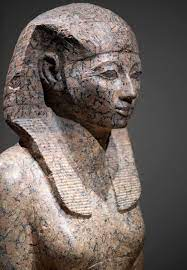
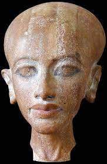
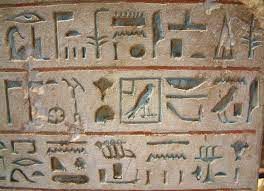

Culture
La nourriture fait partie intégrale de la culture d'un pays et des habitudes des habitants. En Égypte, les plats les plus populaires sont le Tamiya, le Ful Medames, le Koshari le shawarma, kebab & kofta pour n'en nommer que quelques-uns. Plusieurs de ces plats sont de différentes origines et sont réadaptés au goût de cette culture.

La culture Égyptienne comporte de nombreuses différentes époques et aspects incroyables qui ont été vastement étudiés lors de fouilles archéologiques et aussi graçe au travail de compilation des scribes de l'époque qui ont gardé des relevés impressionnants de ces souverains.
 Les hiéroglyphes sont un système d'écriture de l'Égypte antique comportant plusieurs symboles qui représentent en général des objets ou des concepts de la vie humaine. Ce type d'écriture sera utilisé pendant environ 3000 ans avant de se perdre lors de l'époque romaine.
